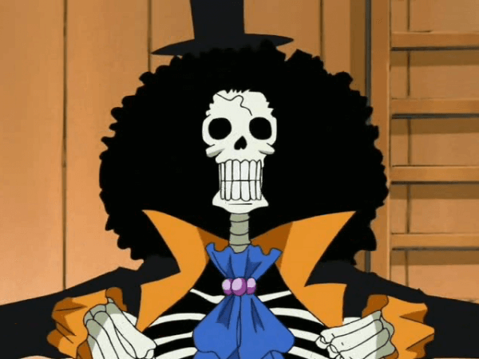
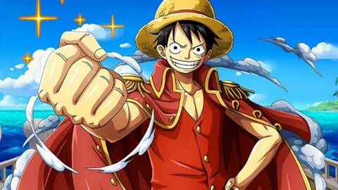
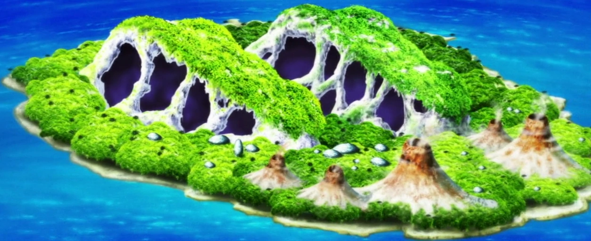
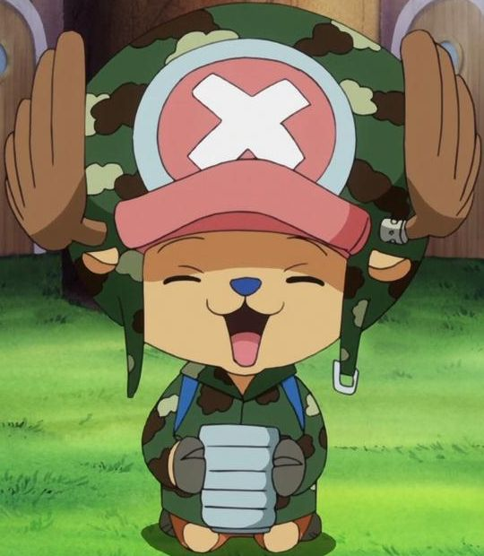
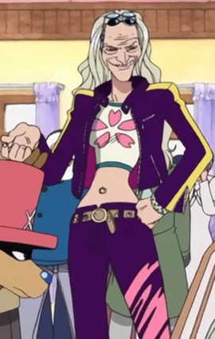
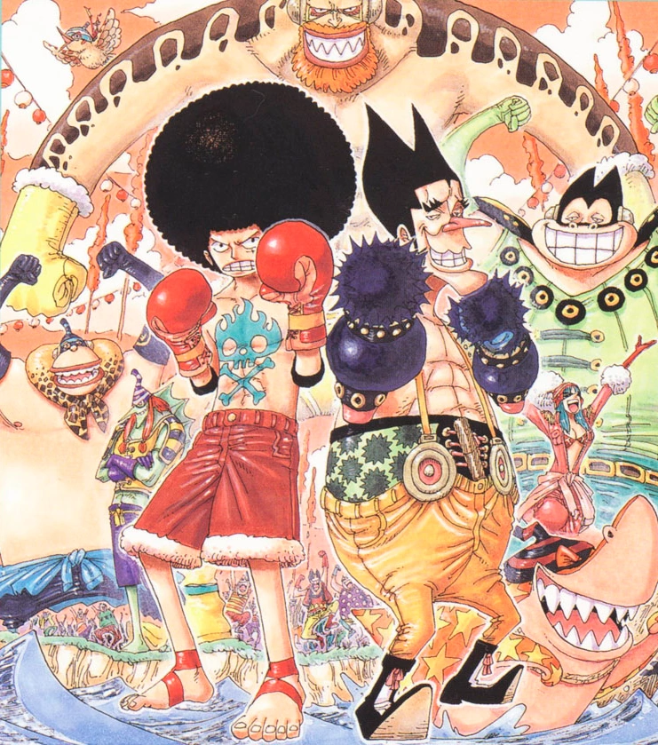

Anime Qcm
Ceci est un QCM sur fairytail !
Connaissez-vous fairytail sur le bout des doigts ?
A vous de jouer pour avoir 10/10 :D .
Pour n'avoir aucun spoil, vous n'aurez pas les réponses a la fin du quizz.
Commencez le test maintenant !

Quel est le nom du squelette à la coupe afro ?
Jazzy
Brian
Brook
Joke
Qui est-il par rapport à Laboon ?
Son fils
Un membre de l'équipage qui naviguait avec elle
Son pire ennemi
Son ami d'enfance auquel elle a été séparée à 8 ans
Qui est Laboon ?
Une baleine
Une otarie géante
Une humaine
Une tortue de mer

Qui est le père de Luffy ?
Monkey D. Garp
Monkey D. Shanks
Monkey D. Paulee
Monkey D. Dragon
Qui est le grand-père de Luffy ?
Monkey D. Garp
Monkey D. Shanks
Monkey D. Paulee
Monkey D. Dragon
Quelle est l'arme du squelette afro ?
Une branche d'arbre
Une canne épée
Des shurikens
Sa coiffure afro

Qui a conseillé à Luffy de ne pas passer par Little Garden ?
Pandaman
Crocodile
Nico Robin
Igaram

Comment s'appelle l'île où se trouve Chopper ?
Rhum
Drum
Prum
Snowdy

Comment s'appelle la doctorine et amie de Chopper ?
Dr. Kureha
Dr. Korema
Dr. Kameha
Dr. Kurema

Qui est la personne qui vient rencontrer les Mugiwara après le Davy Back Fight ?
KiZaru
Ao Kiji
Aka Inu
Davy